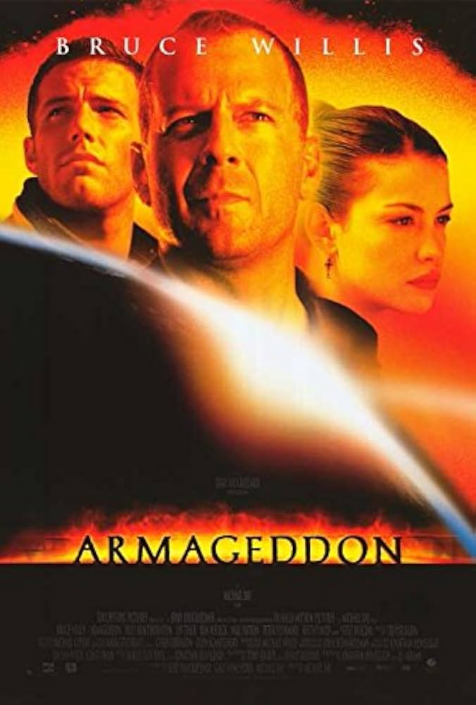
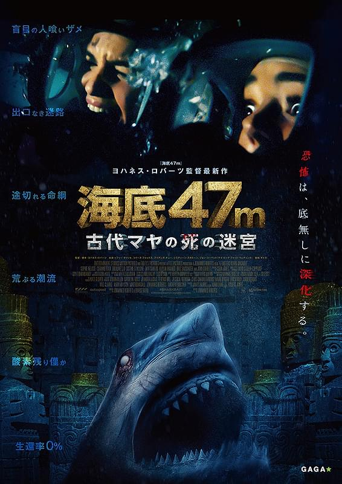

映画紹介サイト
おすすめの映画三選
1.ARMAGEDDON(1998)
あらすじ
地球への衝突コースを取る小惑星が発見された。もしも、テキサス州の大きさにも匹敵するその小惑星が地球に激突すれば、人類の破滅は免れない。これを回避する方法はただひとつ、小惑星内部に核爆弾を設置し、内側から破壊するしかない。そしてその任務に選ばれたのは石油採掘のスペシャリストたちだった。刻々と迫る滅亡へのカウントダウンの中、人類の運命を委ねられた14人の男たちは小惑星へと飛び立つ
詳しくはこちら
2.この世界の片隅に(2016)
あらすじ
どこにでもある毎日のくらし。すずは、広島市江波で生まれた絵が得意な少女。昭和19（1944）年、20キロ離れた町・呉に嫁ぎ18歳で一家の主婦となったすずは、あらゆるものが欠乏していく中で、日々の食卓を作り出すために工夫を凝らす。だが、この頃戦争は進み、日本海軍の根拠地だった呉は、何度もの空襲に襲われる。庭先から毎日眺めていた軍艦たちが炎を上げ、市街が灰燼に帰してゆく。すずが大事に思っていた身近なものが奪われてゆく。それでもなお、毎日は続く。
公式HP
3.海底47m 古代マヤの死の迷宮(2019)
あらすじ
内気な女子高生は、父の再婚でできた義理の姉と打ち解けられずにいた。考古学者の父はそんな娘を心配し、船中からサメを鑑賞するツアーに姉妹を誘う。やがて友人と合流した2人は、マヤ文明の遺跡が眠る海底洞窟へ...
公式HP